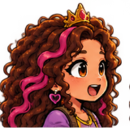
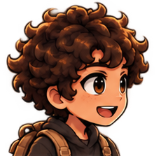

✦Onde estamos?
●LULI + CHRIS
♥ ♥ ♥
🍓0
💎 CHRIS ESTÁ NO CONTROLE! Encontre o cristal rosa ou a curandeira para resgatar Luli.
🎃 GUARDIÃO CASCA-DURA
♥ ♥ ♥
E CONVERSAR

✦
Lulifeliz
TOQUE NA FALA, ESPAÇO OU ▶ PARA CONTINUAR UMA AVENTURA A DOIS
Luli & Chris
De volta para casa
Perdidos em um mundo de frutas e criaturas estranhas, Luli e Chris precisam encontrar o caminho de casa. Juntos, nenhum obstáculo é grande demais.
0 de 8 fases concluídas
LULISalto duplo

CHRISForça
O melhor caminho é aquele que fazemos juntos.